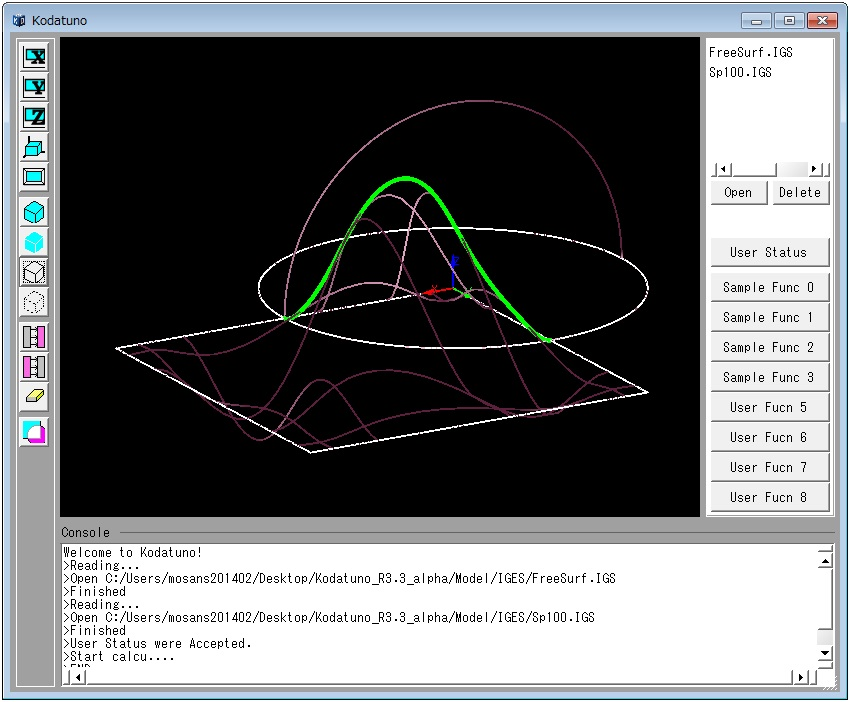

(Ex. 7) NURBS曲面同士の交線を算出する
(Ex. 6)ではNURBS曲面と平面との交線を算出しました．ここでは，NURBS曲面同士の交線を算出してみたいと思います．
"SampleFunc2.cpp"のSmpIntersectSurfs()を実行します．
＜実行手順＞
- Kodatunoアプリケーションを起動し, 適当なIGESデータを2つ読み込みます．
- 表示された2つのBodyから干渉している2つの面を順番にピックします．ピックする面の数は2個にしてください．
- "User Status"からMode2を選択し，Prop1に交点群の点間隔(0.1〜2程度)を入力します．
- "Sample Func 2"ボタンを押します．
- 2つの面の交線が生成されたことを確認してください．

＜ソース解説＞
今回はMode2を選択し，"Sample Func2"ボタンを押しました．これによってSmpIntersectSurfs()が実行されます．
では，SmpIntersectSurfs()を見てみましょう．
int SmpIntersectSurfs(BODYList *BodyList,OBJECTList *ObjList, int PickCount, double Prop[])
{
if(!PickCount) return KOD_ERR; // セレクションされていなかったら、何もしない
NURBS_Func nfunc; // NURBS関連の関数を集めたクラスのオブジェクトを生成
Coord Rt[5000]; // NURBS曲面R(w,t)における解
Coord St[5000]; // NURBS曲面S(u,v)における解
double green[3] = {0,1,0}; // 点表示の色
double feed = Prop[0]; // 交点群の点間隔
GuiIF.SetMessage("Start calcu....");
// 1番目にセレクションされたBODYデータを得る
OBJECT *obj1 = (OBJECT *)ObjList->getData(0);
BODY *body1 = (BODY *)BodyList->getData(obj1->Body);
// 2番目にセレクションされたBODYデータを得る
OBJECT *obj2 = (OBJECT *)ObjList->getData(1);
BODY *body2 = (BODY *)BodyList->getData(obj2->Body);
if(obj1->Type != _TRIMMED_SURFACE || obj2->Type != _TRIMMED_SURFACE) // セレクションされた2つのエンティティがトリム面でない場合は終了
return KOD_ERR;
NURBSS *S1 = body1->TrmS[obj1->Num].pts; // BODY1からNURBS曲面を取り出す
NURBSS *S2 = body2->TrmS[obj2->Num].pts; // BODY2からNURBS曲面を取り出す
int num = nfunc.CalcIntersecPtsNurbsSSearch(S1,S2,10,feed,Rt,St,5000); // NURBS曲面同士の交線算出
for(int i=0;i< num;i++){
Coord p = nfunc.CalcNurbsSCoord(S1,Rt[i].x,Rt[i].y); // uv座標上の点をxyz座標値に変換
DrawPoint(p,1,3,green); // 描画
}
GuiIF.SetMessage("END");
return KOD_TRUE;
}
序盤は概ね問題ないと思います．6,7行目は得られた交点群を格納するための箱ですが，2つの曲面上で得られますので，2つ用意する必要があります．
また，14〜22行目ですが，2つのNURBS曲面をピックしていますので，順番に実体を取り出しています．
NURBS曲面同士の交線計算は28行目のNURBS_Func::CalcIntersecPtsNurbsSSearch()によって行われ，引数として指定したRtとStにそれぞれの面上の交点群が格納されます．
注意点として，(Ex. 6)でも述べたとおり，交点群はパラメータ(u, v)として得られますので，3次元座標値に変換するNURBS_Func::CalcNurbsSCoord()が別途必要です．
以上で(Ex. 7)の解説は終わりです．ここまできてしまえば，ほとんど説明することがないですね．
つぎが最後の例題になります．最後は平均曲率法線ベクトルと呼ばれる聞きなれない曲面情報の抽出を例に，Kodatunoの応用の可能性を広げます．